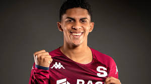
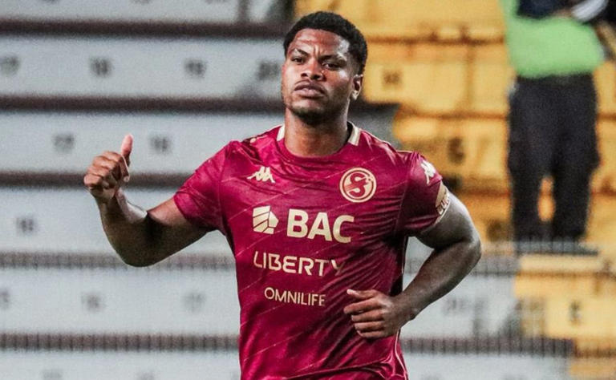
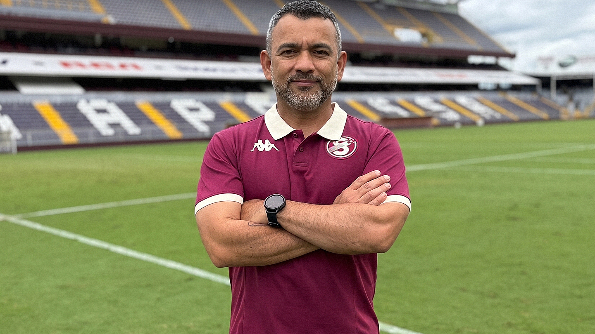
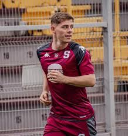
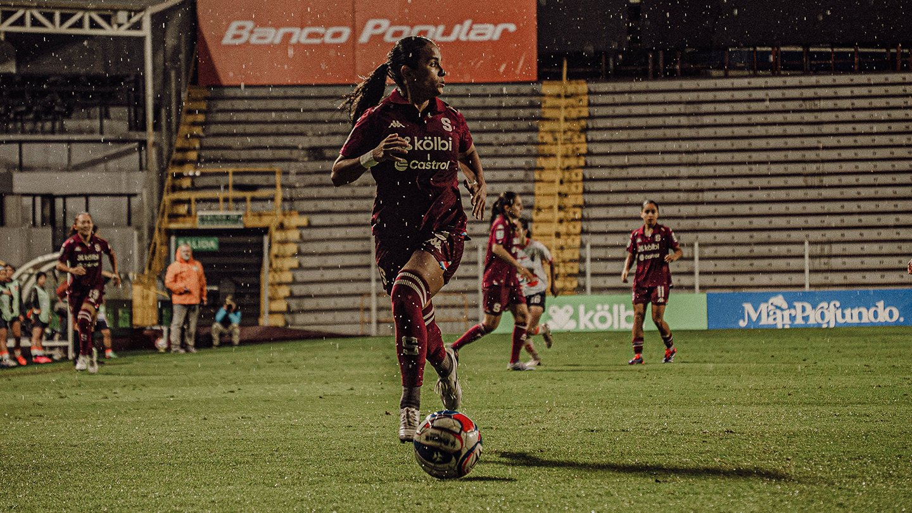

📅 29 Mayo 2026
Por Carlos José Villanueva Ramos

El Deportivo Saprissa confirmó oficialmente que el atacante Rachid Chirino jugará a préstamo durante un año con el recién ascendido Inter de San Carlos.
Chirino llegó al Monstruo Morado en 2024 y tuvo un paso por la Asociación Deportiva San Carlos, donde tuvo una destacada temporada que le abrió las puertas de regreso a Saprissa. Durante su etapa con la institución morada disputó 29 partidos oficiales y anotó en 3 ocasiones.
El club agradeció al jugador por su profesionalismo y le deseó éxitos en esta nueva etapa. ¡Mucha suerte Rachid! 💜
← Volver al Blog Morado📅 29 Mayo 2026
Por Carlos José Villanueva Ramos

¡Buenas noticias para la afición morada! El Deportivo Saprissa confirmó que el delantero panameño Newton Williams extendió su préstamo con la institución por dos torneos cortos más.
Williams llegó al club antes del Torneo de Apertura 2025 y desde el primer momento se ganó el corazón de los saprissistas. Uno de sus momentos más recordados fue en la Copa Centroamericana ante Cartaginés, donde en solo 15 minutos sobre el terreno de juego anotó un gol que enamoró a la afición.
El atacante nacido en enero de 2001 llega con un currículum internacional impresionante — ha jugado en Palmeiras de Brasil, Hapoel Ra'anana de Israel, 9 de Octubre de Ecuador y Antigua GFC de Guatemala. Además ha representado a las selecciones menores de Panamá.
La gran noticia es que Williams está completamente recuperado de la lesión de rodilla que sufrió el año anterior y estará listo para el próximo campeonato con el Primer Equipo. ¡Bienvenido de vuelta Newton! 💜🇵🇦
← Volver al Blog Morado📅 29 Mayo 2026
Por Carlos José Villanueva Ramos

El Deportivo Saprissa anunció el regreso del experimentado preparador físico Erick Sánchez, quien se une al cuerpo técnico del Primer Equipo Masculino de cara al Torneo de Apertura.
Lo que hace especial este fichaje es la trayectoria impresionante de Sánchez — estuvo presente en tres Copas del Mundo con la Selección Nacional de Costa Rica: Brasil 2014, Rusia 2018 y Catar 2022. ¡Tres mundiales! Un profesional de altísimo nivel que regresa a casa.
Su historia con Saprissa viene de lejos — comenzó en las Divisiones Menores de la institución entre 2003 y 2009, donde dio sus primeros pasos en el fútbol profesional.
En esta nueva etapa, Sánchez asumirá la coordinación de toda el área de desarrollo y preparación física de los equipos de la institución. ¡Una incorporación de lujo para el Monstruo Morado! 💜🇨🇷
← Volver al Blog Morado📅 29 Mayo 2026
Por Carlos José Villanueva Ramos

El Deportivo Saprissa confirmó que el volante Kenneth González jugará a préstamo con Municipal Pérez Zeledón.
González es un producto de la cantera morada — pertenece a la institución desde 2015 y fue formado en las Divisiones Menores. Su debut con el Primer Equipo se dio en un momento histórico: el 22 de julio de 2023 durante la final de la Recopa. Desde entonces disputó 12 encuentros oficiales con la camiseta morada y registró 2 asistencias.
El mediocampista nacido en 2004 y oriundo de Hatillo tiene además un palmarés envidiable para su edad — fue parte de los equipos campeones nacionales de Saprissa en 2023 y 2024, y ha integrado procesos de las Selecciones Menores de Costa Rica en categorías Sub-17 y Sub-23.
¡Mucho éxito Kenneth en esta nueva etapa! 💜🇨🇷
← Volver al Blog Morado📅 3 octubre 2026
Por Carlos José Villanueva Ramos

El buen momento del Saprissa Femenino sigue dando frutos a nivel internacional.
Recientemente se confirmó que seis futbolistas del plantel fueron oficialmente convocadas a la Selección Mayor de Costa Rica para la próxima fecha FIFA.
Es una gran noticia que demuestra el peso que tiene el equipo en el campeonato nacional y una oportunidad de oro para que estas jugadoras aporten su talento al combinado patrio.
Puedes ver el listado oficial y los detalles del comunicado en la web oficial de Saprissa. 💜🇨🇷
← Volver al Blog Morado